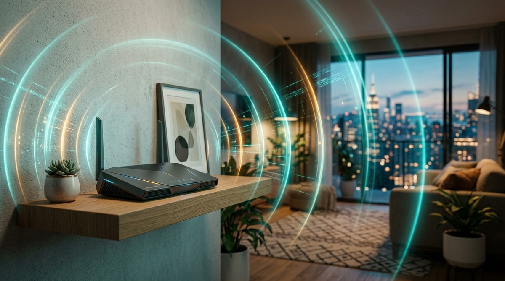
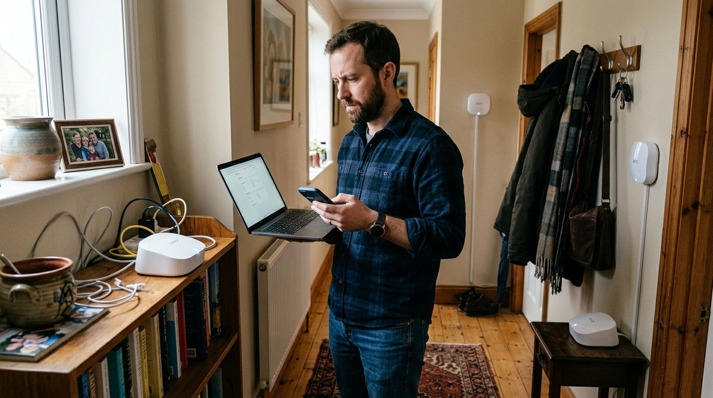
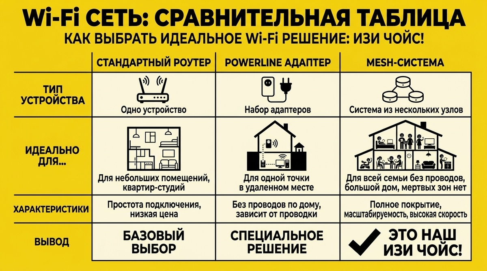

← На главную
Wi-Fi в туалете: Как победить «мёртвые зоны» без покупки роутера за 20 тысяч
Знакомая ситуация: в гостиной интернет «летает», а стоит уйти в дальнюю комнату или на кухню — палочки сигнала исчезают. Обычно мы думаем: «Нужен новый, дорогой роутер». Но часто проблему можно решить бесплатно или за пару тысяч рублей. Давайте разбираться.

Нюанс №1: Роутер в шкафу — деньги на ветер
Многие прячут роутер в металлический щиток в коридоре, за телевизор или в глухой шкаф-купе. Это как пытаться осветить комнату фонариком, спрятанным в коробку из-под обуви. Каждая преграда глушит сигнал.
ИЗИ-правило: Роутер должен стоять в центре квартиры на открытом месте, а не в «глухом» железном ящике.
Нюанс №2: 2.4 ГГц против 5 ГГц — битва за стены
Частота 5 ГГц — это скорость, но она плохо проходит сквозь бетонные стены. Частота 2.4 ГГц — это дальнобойность, она отлично пробивает препятствия, хотя скорость там ниже. Правильный выбор сети часто решает все проблемы.
ИЗИ-правило: В дальней комнате телефон часто «цепляется» за слабую сеть 5 ГГц. Вручную переключите его на сеть 2.4 ГГц.
Нюанс №3: Mesh-система — убийца мёртвых зон
Если квартира большая или стены монолитные, один роутер не добьет. Не покупайте «усилители» (репитеры) — они режут скорость вдвое и заставляют устройства прыгать между сетями. Вам нужна Mesh-система: несколько кубиков, которые создают единую бесшовную сеть.
ИЗИ-правило: Лучше две дешевые точки Mesh, чем один дорогой «супер-роутер».
Кому подойдет Mesh-система?
- Квартиры сложной планировки с длинными коридорами.
- Квартиры с толстыми несущими стенами.
- Двухэтажные дома.

Когда Mesh вам НЕ нужен (Экономим с умом)
Не стоит тратить деньги на сложные системы, если:
- У вас «однушка» или небольшая студия. Достаточно поставить хороший роутер по центру.
- Вам нужен интернет для ТВ-приставки или стационарного ПК. Здесь лучше всего проложить обычный кабель. Кабель всегда стабильнее любого Wi-Fi.
Резюме: Как сделать ИЗИ ЧОЙС?
Финальный чек-лист:
- ДОСТАНЬТЕ роутер из шкафа и поставьте его на открытое место повыше.
- РАЗДЕЛИТЕ сети 2.4 ГГц и 5 ГГц в настройках роутера.
- ЕСЛИ НЕ ПОМОГЛО — купите базовую Mesh-систему на 2 модуля.

Теги:
Умный дом
Полезные советы
Настройка Wi-Fi
Экономия бюджета
Гаджеты 2026